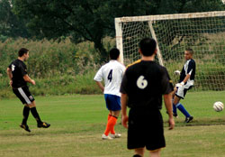
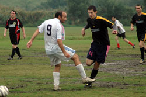
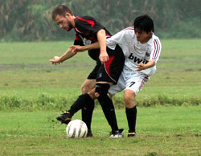
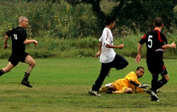

|
Misato, Saturday 3rd October.
Well it came as a shock to everyone that the infamous Misato ground was given the nod early on Saturday morning despite the rain that'd been falling the previous day. Actually for those who were awake at 7:00am the first thing that greeted them on opening the curtains was blue sky and sunshine...... But it didn't last.
A full compliment of Pumas made it to the ground on time where the surface was nicely watered to the extent of being stodgy in places and the overcast sky just promised more rain and duly obliged. Yabe seemed to be missing a few of their regular players but had eleven to start. They were soon reduced to ten men however, when the ref sent their French midfielder off the pitch as he had no shin-pads on. He returned 10 minutes later once he'd found some (probably went old skool with a 'Vogue' magazine down each sock). Let this be a warning to all teams, the referees are well within their rights to stop poorly attired players from playing.
Anyway, the game itself started with Pumas taking the initiative in the slippery conditions. With many of the previous weeks players unavailable, there was a new line-up in the midfield. Chris Batterham, one of the players who helped Panthers get promoted, made his return to the team while on a business trip from Okinawa. He was flanked by old stalwarts Ian Warner and Phil Lowes and between them they took control of the midfield with Alan Yang and Mikhail the Russian taking the flanks. The first goal came about 15 minutes in, Chris won the ball in the middle of the park, then rifled in a shot from about 30 yards out. The keeper was beaten but unfortunately it hit the crossbar and bounced back out into the area. The first person to react was Mark Ralph, partnering Sid upfront for this game. He made no mistake in putting his half volley beyond the keepers reach 1-0 Pumas.
The second goal soon followed when Alan went on a run from the right wing. He carried the ball from the halfway line diagonally across the pitch, bypassing both the Yabe defence and his own strikers. He ignored all calls to "cross it!" and "Pull it back!" instead opting to dribble all the way to the edge of the 6 yard box then hitting it back across the keepers outstretched leg and into the right side of the goal. 2-0 Pumas.
A few more chances were spurned before half time by the boys in black, whilst at the other end stand in Keeper, Romen 'Height doesn't matter in goal' Barua had little to do. Anything that did come through was dealt with by a competent back three of Andy V. Andrew S and Philipp. There was one scare though but Romen pulled of an impressive double save to keep Yabe from scoring, dashing across his goal for the 2nd block! Young Matt Dewey arrived just before half-time fresh from work in Roppongi but elected to spend the rest of the half on the bench warming up!
So into the break with a 2 goal lead, pumas were determined not to make the mistakes of previous games. With just the 1 sub, changes were easy to make and didn't upset the balance of the team - Kei, our other sub, did turn up during the 2nd half but was still drunk so didn't bother getting changed even!
Pumas got the 2nd half off to a flyer, scoring with their best move of the match within a minute. Some quick interplay between the midfield saw Dr Phil go on a run straight towards the Yabe goal, one two, one two then a volley from 8 yards out to finish. It was poetry in motion, belying the recent form of the newest team in the 3rd Division. 3-0 Pumas.
The rain came and went, came and went again but it didn't stop the goals. A clumsy flailing arm from a Yabe midfielder did stop Ian Warners participation in the game however. Frodo, as he's affectionately known in some circles, caught the arm perfectly across the top of his prominent nose and the claret began to gush - game over for the hobbit as he went to get the gash plastered up.
Pumas continued to dominate the match with young Matty making some great runs from midfield and Dr Phil causing all kinds of problems for Yabes defence. When not on the attack, Pumas were keeping the ball well, playing it around the back then up the opposite wing to keep possession. Alan got his 2nd goal of the game in similar fashion to his first. Mark then notched up number 2 and it was becoming a rout! 5-0 Pumas
It wasn't quite all one way traffic though as Romen got called into action at the other end. First a cheeky lob was tried on him as he was lounging around the edge of his box but he leapt like a Salmon to pluck it from the air, then he came out well to block an onrushing striker, diving at his feet. Mark was itching to get his first hattrick in Japan but it looked like it wouldn't be as he spurned the few chances he had. Sid broke down the left after a nice ball from Mikhail, carried the ball into the left side of the area, then curled a nice right footed shot towards the far post, only to see the new (they changed 3 or 4 times in the game) keeper pull off a great save to deny him. Then young Matt beat a couple of defenders down the right and pulled the ball back from the byline towards a shouting Sid near the penalty spot. As he lined up to shoot though he saw Mark coming in too and so stopped his run and let Mark slot it in with his left foot for his hattrick.
6-0 Pumas and game over.
It was a great team effort and good to see people playing with a smile on their face, a far cry from previous games. It's now Pumas time to consolidate and build on this new found form.
Report by Muddy Boots
|

 |